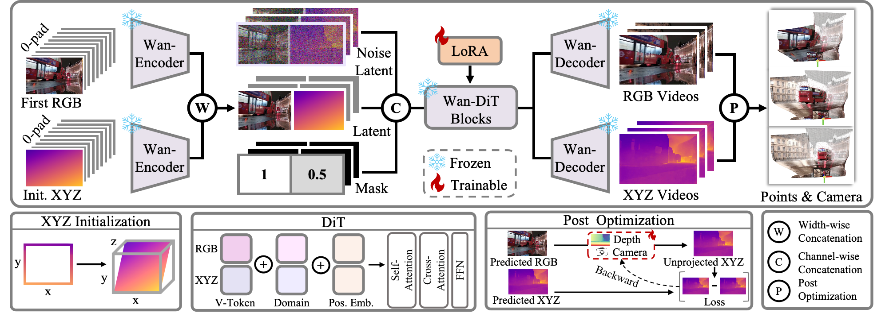

Explore the 4D reconstruction results on various dynamic scenes. For more results, please visit the interactive results.
Drag with left click to rotate view
Scroll to zoom in/out
Drag with right click to move view
Move forward/backward
Move left/right
Move up/down
Abstract
We present 4DNeX, the first feed-forward framework for generating 4D (i.e., dynamic 3D) scene representations from a single image. In contrast to existing methods that rely on computationally intensive optimization or require multi-frame video inputs, 4DNeX enables efficient, end-to-end image-to-4D generation by fine-tuning a pretrained video diffusion model.
Specifically:
1) To alleviate the scarcity of 4D data, we construct 4DNeX-1M, a large-scale dataset with high-quality 4D annotations generated using advanced reconstruction approaches.
2) We introduce a unified 6D video representation that jointly models RGB and XYZ sequences, facilitating structured learning of both appearance and geometry.
3) We propose a set of simple yet effective adaptation strategies to repurpose pretrained video diffusion models for the 4D generation task.
4DNeX produces high-quality dynamic point clouds that enable novel-view video synthesis. Extensive experiments demonstrate that 4DNeX achieves competitive performance compared to existing 4D generation approaches, offering a scalable and generalizable solution for single-image-based 4D scene generation.
Method
Given and an initialized XYZ map, 4DNeX encodes both inputs using a VAE encoder and fuses them via width-wise concatenation.
The fused latent, combined with a noise latent and a guided mask, is processed by a LoRA-tuned Wan-DiT model to jointly generate RGB and XYZ videos.
A lightweight post-optimization step recovers camera parameters and depth maps from the predicted outputs, yielding consistent dynamic point clouds.

Fusion strategies
We explore five fusion strategies to combine RGB and XYZ inputs:
(a) Channel-wise: Breaks pretrained distribution; often fails to generate meaningful outputs.
(b) Batch-wise: Preserves unimodal quality but lacks RGB–XYZ alignment.
(c) Frame-wise: Keeps temporal order but weak cross-modal interaction.
(d) Height-wise: Slightly better alignment, still suboptimal.